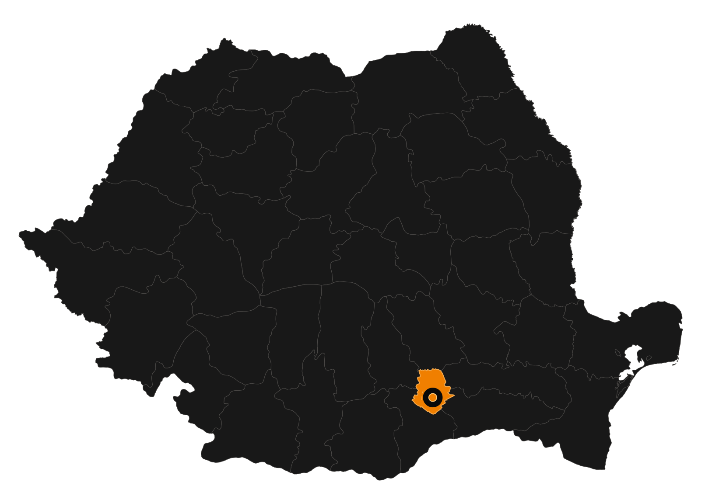

Trotinete urbaneService complet pentru deplasările zilnice
Descoperă magazinul G-Trots cu trotinete electrice, piese, accesorii și echipamente alese pentru drumuri mai bune.
Intră în magazin›De la o pană simplă până la defecțiuni electrice, verificăm cauza și recomandăm soluția potrivită.
Oferim diagnosticare pentru trotinete și scutere electrice în București și Ilfov. Verificăm sistemul electric, mecanic și codurile de eroare înainte de a recomanda reparația potrivită.
Reparăm și reglăm frâne pentru trotinete electrice: plăcuțe, discuri, etriere, cabluri și sisteme hidraulice. Eliminăm zgomotele, vibrațiile și frânarea slabă.
Schimbăm anvelope și camere pentru trotinete electrice, inclusiv modele tubeless și trotinete de mari dimensiuni. Verificăm presiunea, janta și cauza penelor repetate.
Diagnosticăm probleme de electronică la trotinete și scutere electrice: controller, display, accelerație, lumini, senzori, mufe și cablaje deteriorate.
Testăm bateria, încărcătorul și sistemul de alimentare pentru autonomie redusă, încărcare lentă sau pornire imposibilă. Îți explicăm clar opțiunile disponibile.
Revizia pentru trotinete și scutere electrice include verificarea frânelor, anvelopelor, direcției, suspensiei, șuruburilor, bateriei și componentelor electrice.
Alege tipul de vehicul, problema sau zona. Fiecare pagină explică verificările recomandate și pașii următori.
Fără jargon inutil și fără intervenții făcute înainte să știi ce implică.
Sună chiar acumModelul trotinetei și ce ai observat.
Verificăm și îți comunicăm soluția.
Primești trotineta pregătită de drum.
Te ajutăm să revii rapid pe traseu, fie că ai nevoie de o reparație punctuală sau de o revizie completă.

Dacă nu găsești răspunsul aici, trimite-ne modelul trotinetei și problema observată.
Durata depinde de defecțiune și disponibilitatea pieselor. După diagnostic îți comunicăm timpul estimat.
Lucrăm cu majoritatea modelelor populare. Trimite-ne marca și modelul pentru confirmare.
Da. Verificăm problema și discutăm soluția înainte de orice intervenție.
Da, G-Trots oferă servicii pentru clienți din București și Ilfov.
Sună-ne acum, spune-ne modelul și problema observată, iar noi îți explicăm clar următorii pași.
G-Trots serviceSună chiar acum+40 0762 093 915